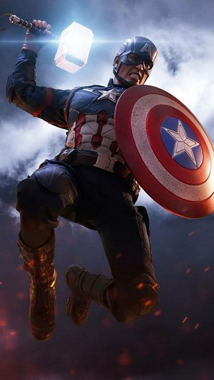
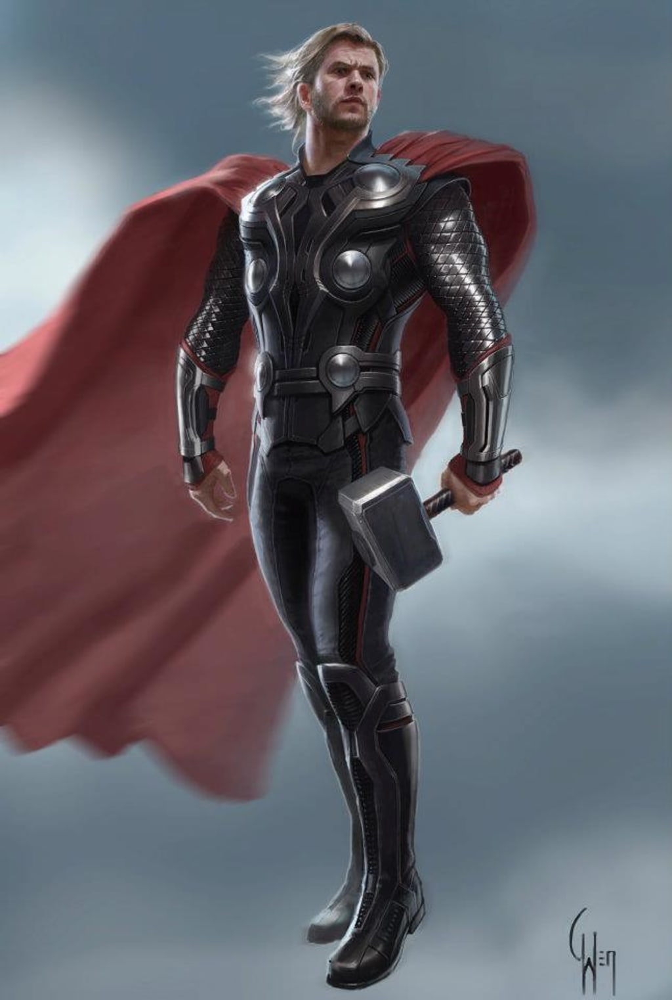
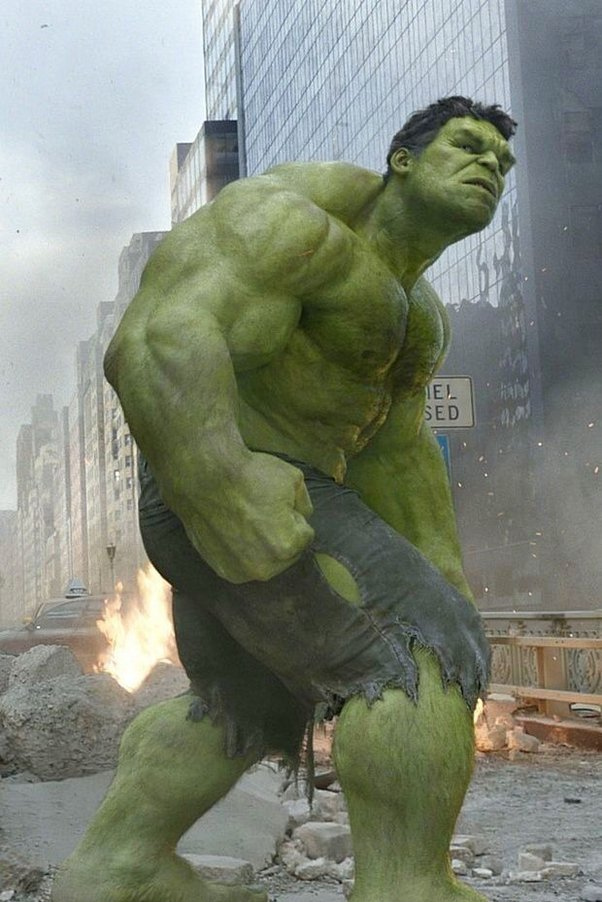
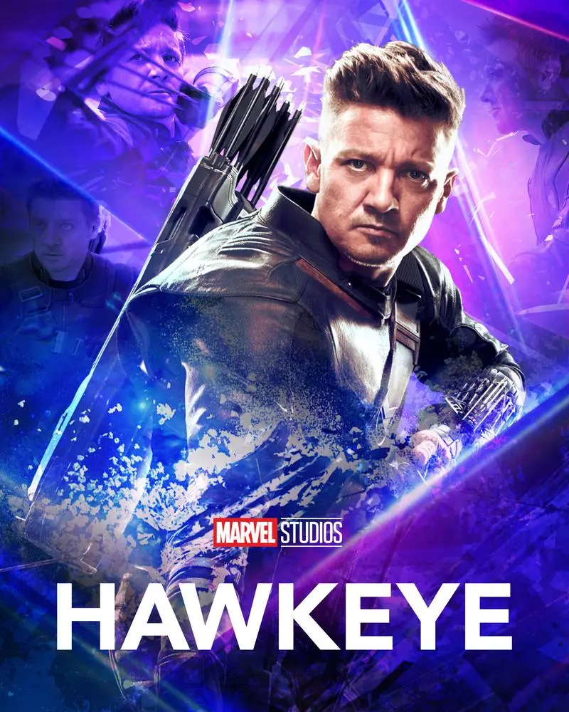

Marvel Studios, LLC (originally known as Marvel Films from 1993 to 1996) is an American film and television production company that is a subsidiary of Walt Disney Studios, a division of the Walt Disney Company.The Marvel Cinematic Universe (MCU) is an American media franchise and shared universe centered on a series of superhero films produced by Marvel Studios. The films are based on characters that appear in American comic books published by Marvel Comics. The franchise also includes television series, short films, digital series, and literature. The shared universe, much like the original Marvel Universe in comic books, was established by crossing over common plot elements, settings, cast, and characters. Marvel Studios releases its films in groups called "Phases", with the first three phases collectively known as "The Infinity Saga" and the following three phases as "The Multiverse Saga". The first MCU film, Iron Man (2008), began Phase One, which culminated in the 2012 crossover film The Avengers. Phase Two began with Iron Man 3 (2013) and concluded with Ant-Man (2015). Phase Three began with Captain America: Civil War (2016) and concluded with Spider-Man: Far From Home (2019). Phase Four began with Black Widow (2021) and will conclude with Black Panther: Wakanda Forever (2022). Ant-Man and the Wasp: Quantumania (2023) will begin Phase Five, which will end with Thunderbolts (2024), and Phase Six begins with Fantastic Four (2024). Phase Six and "The Multiverse Saga" will conclude with Avengers: The Kang Dynasty (2025) and Avengers: Secret Wars (2025). Marvel Television expanded the universe to network television with Agents of S.H.I.E.L.D. on ABC in 2013 before further expanding to streaming television on Netflix and Hulu and to cable television on Freeform. They also produced the digital series Agents of S.H.I.E.L.D.: Slingshot. Marvel Studios began producing their own television series for streaming on Disney+, starting with WandaVision in 2021 as the beginning of Phase Four. The MCU also includes tie-in comics published by Marvel Comics, a series of direct-to-video short films called Marvel One-Shots, and viral marketing campaigns for the films featuring the faux news programs WHIH Newsfront and The Daily Bugle. The franchise has been commercially successful and generally received positive reviews. It has inspired other film and television studios to attempt similar shared universes, and has also inspired several themed attractions, an art exhibit, television specials, guidebooks for each film, multiple tie-in video games, and commercials.
Deadpool, whose real name is Wade Winston Wilson, is a disfigured mercenary with the superhuman ability of regeneration and physical prowess. The character is known as the "Merc with a Mouth" because of his tendency to talk and joke constantly, including breaking the fourth wall for humorous effect and running gags.
Deadpool made his first appearance in The New Mutants comics in
1991, co-created by Fabian Nicieza and Rob Liefeld, who was made in the
vein of the DC Comics villain Deathstroke, having an uncanny resemblance
to his costume and skills (his name, Wade Wilson is even a play off of
Deathstroke's real name, Slade Wilson). In a short time since he was
created in the '90s, Deadpool has amassed a huge following amongst comic
book readers and convention-goers. Seriously, everyone dresses up as
Deadpool at conventions. Why? Because he's a hilarious, self-deprecating,
fourth wall-breaking riff off of established superheroes. He even leans
into his resemblance to every other comic book character -- Deadshot,
Deathstroke, sort of Spider-Man -- and turns the whole thing into a
meta-commentary joke.
Captain America is the alter ego of Steve Rogers, a frail young artist enhanced to the peak of human perfection by an experimental "super-soldier serum" after joining the military to aid the United States government's efforts in World War II.
This article is about the fictional character. For the 2008 film based on the character, see Iron Man (2008 film). For other uses, see Iron Man (disambiguation). "Tony Stark" redirects here. For the film character, see Tony Stark (Marvel Cinematic Universe).
Playboy and visionary industrial genius Tony Stark, CEO of leading military defense contractor, Stark Industries, is in war-torn Kunar, Afghanistan, to demonstrate his company's new Jericho missile. With him is his friend and military liaison, Lieutenant Colonel James Rhodes, a member of the U.S. Air Force.missile, Stark and Yinsen secretly build a powerful electric generator called an Arc Reactor to power Stark's electromagnet. They then begin to build a powered suit of armor, designed by Stark, to help them escape. The Ten Rings ambush the workshop when they discover Stark's plan, but Yinsen sacrifices himself to distract them while Stark's suit powers up. Using the armored suit, Stark fights his way out of the cave to find a mortally wounded Yinsen, who reassures Stark and urges him to continue his escape and not waste his life. An enraged Stark leaves the cave, burns the terrorist's stockpile of Stark Industries-produced weapons, and flies away. Having escaped, Stark crashes in the desert, which destroys the suit.
In his home workshop, Stark spends the next few months building an improved version of his suit, as well as a more powerful arc reactor for his chest. At Stark's first public appearance after his return, Christine Everhart informs him that Stark Industries weapons, including the Jericho missile, were recently delivered to the Ten Rings and are being used to attack Gulmira, Yinsen's home village. Stark confronts Stane about the supplied weapons and learns that Stane is trying to replace him as head of the company.Stane's scientists reveal that they cannot finish his suit, as no one can manage to duplicate Stark's Arc Reactor. Stane ambushes Stark at his home, using a Sonic Taser to paralyze him and take his current Arc Reactor. Left to die, Stark manages to crawl to his lab and saves himself by re-using his original arc reactor. Potts and several S.H.I.E.L.D. agents attempt to arrest Stane, but he dons his suit and attacks them. Stark fights Stane, but is outmatched without his upgraded reactor to run his suit at full capacity.
Stark tells the entire world that he is Iron Man
Stark lures Stane atop the Stark Industries building and instructs Potts to overload the large Arc Reactor there. Doing so unleashes a massive electrical surge that knocks Stane unconscious, causing him and his armor to fall into the exploding reactor, killing him. The next day, the press has dubbed the armored hero "Iron Man." Agent Coulson gives Stark a cover story to explain the events of the night and Stane's death. At a press conference, Stark begins giving the cover story, but then instead announces that he is Iron Man, shocking the public as the crowd of interviewers suddenly begin roaring out questions, much to Rhodes' confusion.
Nick Fury introduces himself to Tony Stark
Afterward, Nick Fury visits Stark at his home, stating that Iron Man is not "the only superhero in the world," and wants to discuss the Avengers Initiative.
Cast
Thor is the son of Odin, the All-Father and King of Asgard. He was worshiped by the humans known as Vikings and became part of Norse Mythology. Armed with his enchanted Uru hammer Mjolnir, which helps him to channel his godly energies, he became the mightiest warrior in the Ten Realms.
Thor Odinson is the Asgardian God of Thunder, the former king of Asgard and New Asgard, and a founding member of the Avengers. When his irresponsible and impetuous behavior reignited an ancient war between Asgard and Jotunheim, Thor was denied the right to become king, stripped of his power and hammer Mjølnir, and banished to Earth by Odin. While exiled on Earth, Thor learned humility, finding love with Jane Foster, and helped save his new friends from the Destroyer sent by Loki. Due to his selfless act of sacrifice, Thor redeemed himself in his father's eyes and was granted his power once more, which he then used to defeat Loki's schemes of genocide.During his stay on Earth, Thor helped the Avengers to locate Loki's Scepter during the fight against HYDRA. Following HYDRA's defeat and the capture of Baron Strucker, the team had to stop the newly created Ultron, a rogue invention inadvertently created by Tony Stark which conspired to bring about human extinction. Once Ultron had been defeated, Thor promised his allies that he would return and went back to Asgard to investigate the visions he saw when being manipulated by Wanda Maximoff of the Infinity Stones. In his investigations, Thor also discovered that Loki was still alive and had usurped Odin's royal throne during Thor's absence.
To aid in both pursuing his brother and finding his father to return peace to Asgard, Thor sought help from Doctor Strange, who led him to Odin moments before his passing to Valhalla. Shortly afterwards, Thor met Hela, the Goddess of Death and his sister. In the wake of his first encounter with Hela, Mjølnir was destroyed and he was banished to Sakaar, where he was forced to compete in the Contest of Champions. After a reunion and subsequent fight with Hulk, the pair allied with the rogue Valkyrie in order to save Asgard and escape Sakaar. After battling with Hela and losing an eye to her, Thor then had Loki unleash Ragnarök and destroy Asgard, killing Hela in the process, although he escaped with the remaining Asgardians. Declaring that Asgard was all its people and not a place, Thor accepted his newfound position as king and decided to relocate the Asgardians on Earth. Following Thanos' death, Thor left the Avengers and relocated to Tønsberg, Norway, where he and the surviving Asgardians resettled, renaming the town New Asgard. Five years later, Hulk and Rocket traveled to New Asgard to convince the now-overweight and depressed Thor to rejoin the team after discovering how to travel through time. Thor joined the Avengers on their Time Heist and participated in the Battle of Earth, where he fought an alternate timeline Thanos alongside Captain America and Iron Man, the latter sacrificing his life to eliminate Thanos and his armies. After attending Stark's funeral, Thor decided to join the Guardians of the Galaxy, proclaiming Valkyrie to succeed him as king of the Asgardians.
David Banner is a genetics researcher for the government trying to improve human DNA; his supervisor, Colonel Thaddeus "Thunderbolt" Ross, forbids human experimentation, so David experiments on himself. His wife, Edith, soon gives birth to their son, Bruce Banner.
David realizes Bruce inherited his mutant DNA and attempts to find a cure. After discovering his dangerous experiments, Ross shuts down David's research; David rigs Desert Base's gamma reactor to explode as revenge. Believing he is dangerous, David tries to kill Bruce but accidentally murders Edith when she gets between them; the trauma makes Bruce suppress his early childhood memories. Ross arrests and sends David to a mental hospital, putting the 4-year-old Bruce into foster care. Mrs. Krenzler adopts him, and Bruce assumes the surname, growing up believing his birth parents are dead. Thirty years later, Bruce is a brilliant scientist working at the Berkeley Lab with his girlfriend and Ross's estranged daughter, Betty Ross. Representing the private research company Atheon, the shady Glenn Talbot becomes interested in the scientists' nanomeds research to create regenerating soldiers for the military-industrial complex. David reappears as a janitor in the lab building to infiltrate Bruce's life. The now-general Ross investigates, becoming concerned for Betty's safety around Bruce. Bruce saves a colleague named Harper from an accident with a malfunctioning gammasphere. Bruce wakes in a hospital bed and tells Betty he feels better than ever, but Betty cannot fathom his survival since the nanomeds killed everything else; unknown to them, the radiation merged with Bruce's altered DNA. David meets Bruce after hours, revealing their relationship and hinting at Bruce's mutation. He later uses samples of Bruce's DNA for animal experimentation. Bruce's increasing rage from the tensions mounting around him activates his gamma-radiated DNA; he becomes the Hulk and destroys the lab. Betty finds Bruce unconscious in his home the following morning, barely remembering last night. Ross arrives later to question Bruce before Betty locates David to investigate him. After hours of interrogation, Ross seizes the lab and places Bruce under house arrest. David calls Bruce that night, revealing he mutated his three dogs and sicced them on Betty, enraging him. Then Talbot attacks Bruce about the lab's destruction; Bruce transforms and injures him and Ross's MPs. The Hulk finds Betty at her forest cabin, saves her from the dogs, and changes back.
Black Widow (Natalia Alianovna "Natasha" Romanova; Russian: Наталья Альяновна "Наташа" Романова)[1] is a fictional character appearing in American comic books published by Marvel Comics. Created by editor and plotter Stan Lee, scripter Don Rico, and artist Don Heck, the character debuted in Tales of Suspense #52 (April 1964). The character was introduced as a Russian spy, an antagonist of the superhero Iron Man. She later defected to the United States, becoming an agent of the fictional spy agency S.H.I.E.L.D. and a member of the superhero team the Avengers.
Aside from the arcs in Marvel Fanfare and Journey into Mystery, the Black Widow has starred in four limited series and four graphic novels. The three-issue Black Widow (June-Aug. 1999), under the Marvel Knights imprint, starred Romanova and fully introduced her appointed successor, Captain Yelena Belova, who had briefly appeared in an issue of the 1999 series Inhumans. The writer for the story arc, "The Itsy-Bitsy Spider" was Devin K. Grayson while J. G. Jones was the artist.[10] The next three-issue, Marvel Knights mini-series, also titled Black Widow (Jan.–March 2001) featured both Black Widows in the story arc "Breakdown", by writers Devin Grayson and Greg Rucka with painted art by Scott Hampton.[11] Romanova next starred in another solo miniseries titled Black Widow: Homecoming (Nov. 2004–April 2005), also under the Marvel Knights imprint and written by science fiction novelist Richard K. Morgan, with art initially by Bill Sienkiewicz and later by Sienkiewicz over Goran Parlov layouts.[10] A six-issue sequel, Black Widow: The Things They Say About Her (Nov. 2005–April 2006; officially Black Widow 2: The Things They Say About Her in the series' postal indicia), by writer Morgan, penciller Sean Phillips, and inker Sienkiewicz, picks up immediately where the previous miniseries left off, continuing the story using many of the same characters.[12] She starred in the solo graphic novel Black Widow: The Coldest War (April 1990),[11] and co-starred in three more: Punisher/Black Widow: Spinning Doomsday's Web (Dec. 1992); Daredevil/Black Widow: Abattoir (July 1993); and Fury/Black Widow: Death Duty (June 1995), also co-starring Marvel UK's Night Raven.[citation needed] Black Widow is also featured in the short story Love Is Blindness in I Heart Marvel: Marvel Ai (2006) #1 (April 2006), where she instigates a humorous fight with Elektra over Daredevil's affections. The comic is stylized to look like Japanese animation and uses images, not words, inside the speech and thought bubbles to convey what the characters are saying/thinking.[13]
Hawkeye was introduced as a reluctant villain in Tales of Suspense #57 (Sept. 1964). After two more appearances as a villain in Tales of Suspense #60 and #64 (Dec. 1964 and April 1965), Hawkeye joined the ranks of the Avengers in The Avengers #16 (May 1965). He became a perennial member of the team and has made numerous appearances in all five volumes ((vol. 1) (1963–1996), (vol. 2) (1997), (vol. 3) (1999–2004), (vol. 4) (2010–2013), and (vol. 5) (2013–present)), including special issues and Annuals, as well as in The Ultimates.
Clint Barton was born in Waverly, Iowa. At a young age he lost both of his parents in a car crash. After six years in an orphanage, Clint and his brother Barney Barton ran away to join the Carson Carnival of Traveling Wonders.[11] Clint soon caught the eye of the Swordsman, who took the young boy on as his assistant. Along with the help of Trick Shot, the Swordsman trained Clint to become a master archer.[12] Clint later found the Swordsman embezzling money from the carnival. Before he could turn his mentor over to the authorities, Clint was beaten and left for dead, allowing the Swordsman to escape town.[13] Clint's relationship with his brother Barney and Trick Shot soon deteriorated as well.[14] Clint adapted his archery skills to become a star carnival attraction, a master archer called "Hawkeye", otherwise known as "The World's Greatest Marksman". He spent some time as a member of Tiboldt's Circus,[15] before joining the Coney Island Circus. He witnessed Iron Man in action and was inspired to become a costumed hero. However, after a misunderstanding on his first outing, Hawkeye was accused of theft and believed to be a criminal. On the run, the naive Hawkeye met Black Widow, a spy for the Soviet Union, with whom he fell in love. Mindlessly following Black Widow, Hawkeye aided her attempts to steal technology developed by Tony Stark (Iron Man). In one of their battles with Iron Man, Black Widow was seriously injured. Hawkeye rescued her and fled the battle to save her life. But before Hawkeye could take her to a hospital, Black Widow disappeared. Hawkeye decided to be a "straight-shooter" from then on.[16]